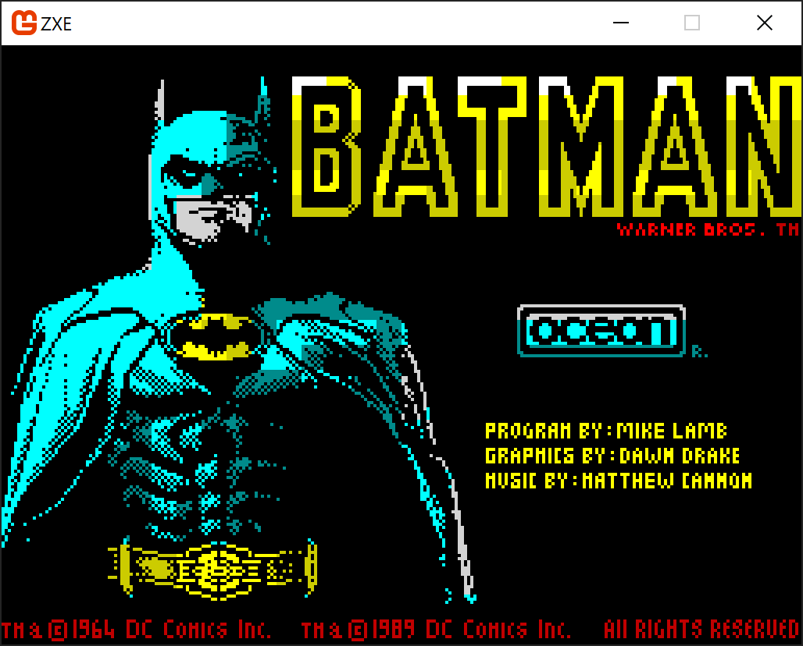
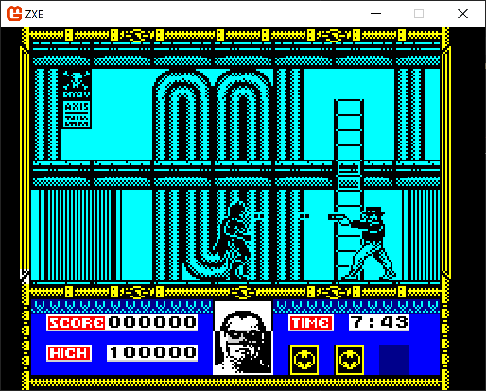

ZXE 128 Gaming
As mentioned in my previous post, I have been modifying my code to also emulate the 128k Spectrum model(s). The menu system works, 128 BASIC, Calculator and 48 BASIC modes work.
Gaming is proving a mixed bag. I have modified my Z80 file reader to cope with version 2 files now and found a few game images in that format.
The best one that I can get running so far is Batman The Movie from back in 1989.


I have fond memories of playing this a ton as a teenager. A bit more difficult than I remember though...
Here's some footage captured from the emulator.